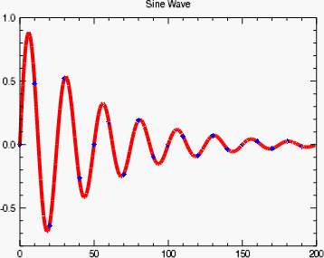

The PLOT function draws a line plot of vector arguments. If one parameter is used, the vector parameter is plotted on the ordinate versus the point number on the abscissa. To plot one vector as a function of another, use two parameters.

The following lines create the plot shown at the top of this topic.
; Create data representing the sine wave
theory = SIN(2.0*FINDGEN(200)*!PI/25.0)*EXP(-0.02*FINDGEN(200))
; Create the plot
plot = PLOT(theory, "r4D-", TITLE="Sine Wave")
; Set some properties
plot.SYM_INCREMENT=10
plot.SYM_COLOR="blue"
plot.SYM_FILLED=1
plot.SYM_FILL_COLOR=0
See Plot Examples for additional examples using the PLOT function.
graphic = PLOT( Y , [Format] [, Keywords = value ] [, Properties = variable ])
graphic = PLOT (X , Y , [Format] [, Keywords = value ] [, Properties = variable ])
Keywords are applied only during the initial creation of the graphic.
[, AXIS_STYLE ={0|1|2|3}] [, / BUFFER ] [, / CURRENT ] [, / DEVICE ] [, DIMENSIONS = array ] [, LAYOUT = array ] [, LOCATION = array ] [, MARGIN = array ] [, / NODATA ] [, OVERPLOT =1 or variable ] [, POSITION = array ] [, WINDOW_TITLE = string ] [, Properties = variable ]
Properties can be set as keywords to the function during creation, or retrieved or changed using the "." notation after creation.
Note: Unlike other keywords in IDL, you cannot use an abbreviated form of the property name when setting them during creation. Instead, you must use the full property name.
ANTIALIAS , ASPECT_RATIO , AXES , BACKGROUND_COLOR , BACKGROUND_TRANSPARENCY , CLIP , COLOR , CROSSHAIR , FILL_BACKGROUND , FILL_COLOR , FILL_LEVEL , FILL_TRANSPARENCY , FONT_COLOR , FONT_NAME , FONT_SIZE , FONT_STYLE , HIDE , LINESTYLE , MAPGRID , MAPPROJECTION , MAP_PROJECTION , MAX_VALUE , MIN_VALUE , NAME , RGB_TABLE , SYM_COLOR , SYM_FILLED , SYM_FILL_COLOR , SYM_INCREMENT , SYM_OBJECT , SYM_SIZE , SYM_THICK , SYM_TRANSPARENCY , SYMBOL , THICK , TITLE , TRANSPARENCY , UVALUE , VERT_COLORS , WINDOW , XRANGE , YRANGE , ZVALUE
The PLOT function returns a reference to the created graphic. Use the returned reference to manipulate the graphic after creation by changing properties or calling methods.
A vector representing the abscissa values to be plot ted. If X is not specified, Y is plot ted as a function of point number (starting at zero). If both arguments are provided, Y is plot ted as a function of X .
The ordinate data to be plot ted.
A string that sets line and symbol format properties using short tokens to represent color, symbol, linestyle, and thickness values. For example, to create a plot with a solid red line of thickness 2, using the '+' symbol to mark data points, you would use the following:
p = PLOT(data, '-r2+')
Tokens in the Format string represent values of the LINESTYLE, COLOR, THICK, and SYMBOL properties. From one to four tokens can be present, and the tokens may be in any order. Tokens are case sensitive. For more information about the syntax of the Format argument, see Formatting IDL Graphics Symbols and Lines .
Set this keyword to one of the following values:
You can set the following properties on the axes:
|
Property |
Description |
|---|---|
|
[XYZ]COLOR |
A string or RGB vector containing the axis color. |
|
[XYZ]GRIDSTYLE |
A string or integer giving the linestyle for tickmarks. |
|
[XYZ]LOG |
Set to 1 if the axis is logarithmic. |
|
[XYZ]MAJOR |
The number of major tick marks. Set to -1 to auto-compute, set to 0 to suppress. |
|
[XYZ]MINOR |
The number of minor tick marks. Set to -1 to auto-compute, set to 0 to suppress. |
|
[XYZ]SHOWTEXT |
Set to 1 to show text labels or 0 to hide the text labels. |
|
[XYZ]STYLE |
The axis range style. The valid values are: (0) "Nice" range. Default for all graphics except Image, Barplot, and Map. (1) Force the exact data range. Default for Image, Barplot, and Map. (2) Pad the axes slightly beyond the "nice" range. (3) Pad the axes slightly beyond the exact data range. Note: The [XYZ]RANGE takes precedence over this property. |
|
[XYZ]SUBTICKLEN |
The ratio of the minor tick length to the major tick length. The default is 0.5. |
|
[XYZ]TEXT_COLOR |
A string or RGB vector containing the axis text color. |
| [XYZ]TEXT_ORIENTATION | The angle (in degrees) of the tick mark labels. |
|
[XYZ]TEXTPOS |
Set to 1 to position text above the axis. The default is 0, below the axis. |
|
[XYZ]THICK |
Set to a floating-point value between 0 and 10 to specify the line thickness for tickmarks. A thickness of 0 gives a thin hairline. The default is 1. |
|
[XYZ]TICKDIR |
Set to 1 to draw the tickmarks facing outwards. The default is 0, facing inwards. |
|
[XYZ]TICKFONT_NAME |
A string containing the font name for the axis text. |
|
[XYZ]TICKFONT_SIZE |
The axis text size in points. |
|
[XYZ]TICKFONT_STYLE |
A string or integer containing the font style: "normal" (0), "bold" (1), "italic" (2), or "bold italic" (3). |
|
[XYZ]TICKFORMAT |
A string or string array of tick label formats. |
|
[XYZ]TICKINTERVAL |
The interval between major tick marks. |
|
[XYZ]TICKLAYOUT |
Set to 1 to suppress tick marks; set to 2 to draw a box around the tick labels. |
|
[XYZ]TICKLEN |
The normalized length of each major tick mark. Tick lengths < 0.25 are in arbitrary units that do not scale with the graphic. Larger tick lengths are normalized relative to the width of the graphic. The default is 0.05. |
|
[XYZ]TICKNAME |
A string array containing the tick labels. |
|
[XYZ]TICKUNITS |
A string giving the tick units. Valid values are "" (the default), "Years", "Months", "Days", "Hours", "Minutes", "Seconds", or "Time". If any of the time units are utilized, then the tick values are interpreted as Julian date/time values. If more than one unit is provided, the axis will be drawn with multiple levels. |
|
[XYZ]TICKVALUES |
An array of tick mark locations. |
|
[XYZ]TITLE |
A string giving the axis title. |
|
[XYZ]TRANSPARENCY |
An integer from 0-100 giving the percent transparency. |
For more detailed explanations of these properties, see the AXIS function.
Tip: You can also use the AXIS function to insert additional axes after the graphic has been created.
Set this keyword to 1 to direct the graphics to an off-screen buffer instead of creating a window.
Set this keyword to create the graphic in the current window. If no window exists, a new window is created. The WINDOW's SetCurrent method may be used to set the current window.
Set this keyword if values are specified in device coordinates (pixels) for the MARGIN and POSITION keywords. (Normalized coordinates are the default for these keywords.)
Set this keyword to a two-element vector of the form [ width , height ] to specify the window dimensions in pixels. If you do not specify a value for DIMENSIONS, IDL by default uses the values of the IDL_GR_WIN_HEIGHT and IDL_GR_WIN_WIDTH preferences for Windows platforms or the IDL_GR_X_HEIGHT and IDL_GR_X_WIDTH preferences for X Windows systems on UNIX.
Set this keyword to a three-element vector [ ncol , nrow , index ] that arranges graphics in a grid. The first dimension ncol is the number of columns in the grid, nrow is the number of rows, and index is the grid position at which to place the graphic (starting at element 1). This keyword is ignored if either OVERPLOT or POSITION is specified.
Set this keyword to a two-element vector [ X offset , Y offset ] giving the window's screen offset in pixels.
Set this keyword to the current graphic’s margin values in the layout specified by the LAYOUT property. Use a scalar value to set the same margin on all sides, or use a four-element vector [ left , bottom , right , top ] to specify different margins on each side.
By default, margin values are expressed in normalized units ranging from 0.0 to 0.5. If the DEVICE keyword is set, the values are given in device units (pixels).
This keyword is ignored if either OVERPLOT or POSITION is specified.
Set this keyword to 1 to create the graphic, but without any data attached to it. The axes and title (if present) are also created and displayed. If the OVERPLOT keyword is specified, axis ranges will not change.
Note: You must still provide valid input arguments. The data range of the input arguments are used to automatically set the range of the axes. The [XYZ]RANGE properties may be used to override these default ranges.
Set this keyword to 1 (one) to place the graphic on top of the existing graphic in the current window. If no current window exists, a new window is created.
Set this keyword to an existing IDL Graphic reference to direct the new graphic to the window specified by the provided IDL Graphic reference.
Set this keyword to a four-element vector that determines the location of the visualization within the graphic window. The coordinates x 0 , y 0 represent the lower left and x 1 , y 1 represent the upper right corners of the data space. Coordinates are expressed in normalized units ranging from 0.0 to 1.0. If the DEVICE keyword is set, the units are given in device units (pixels).
Note: When using POSITION, factor in enough space to display the title and axis labels. For example, if you use POSITION to place your visualization at 0 on the X or Y axis, any labels for that axis will not be visible.
Set this keyword to the title of the IDL Graphic window. The title is displayed in the window's title bar.
By default anti-aliasing is used when drawing lines. Set this property to 0 to disable anti-aliasing.
A floating point value indicating the ratio of the Y dimension to the X dimension in data units. If this property is set to a nonzero value, the aspect ratio will be preserved as the graphic is stretched or shrunk. The default value is 0 for all graphics except images, meaning that the aspect ratio is not fixed, but is allowed to change as the graphic is stretched or shrunk.
This property retrieves an array that contains all of the AXIS objects within the visualization. For example, for a plot visualization:
p = PLOT(/TEST)
ax = p.AXES
ax[0].TITLE = 'X axis'
ax[1].TITLE = 'Y axis'
ax[2].HIDE = 1 ; hide top X axis
ax[3].HIDE = 1 ; hide right Y axis
See AXIS for a list of the available properties.
Set this property to a string or RGB vector indicating the graphic's background color. The default value is [255, 255, 255] (white). Set this property to a scalar value to remove the background color.
Tip: To set the background color of the entire window, retrieve the window object using the WINDOW property, and set the BACKGROUND_COLOR on the window object.
Set this property to an integer between 0 and 100 giving the percent transparency of the background color. The default is 100 (completely transparent).
Note: If the BACKGROUND_COLOR property is changed, and the current background transparency is 100, then the BACKGROUND_TRANSPARENCY will be automatically set to 0 (opaque) so that you can see the new color.
Set this property to 1 to clip portions of the graphic that lie outside of the dataspace range, or to 0 to disable clipping. The default is 1.
Set this property to a string or RGB vector that specifies the color of the plot line.
Note: When you retrieve the COLOR property, the returned value will always be a three-element RGB vector, regardless of how the color was initially specified.
Use this property to retrieve a reference to the Crosshair graphic. All graphics objects within the same set of axes share a single Crosshair graphic. For Plot graphics the default behavior is to display the crosshair when the plot is selected. For other graphics the crosshair is disabled. The STYLE property may be used to control the automatic crosshair display, while the LOCATION property is used to manually draw a crosshair.
You can get and set the following properties on the retrieved crosshair:
|
Property |
Description |
|---|---|
|
ANTIALIAS |
Set to 1 to enable anti-aliasing for the lines. |
|
COLOR |
A string or RGB vector containing the color. |
|
HIDE |
Set to 1 to hide the crosshair, 0 to show. |
|
INTERPOLATE |
Set to 1 to force interpolation between Plot data points when SNAP is active. For other graphics this property is ignored. The default is 0. |
|
LINESTYLE |
An integer or string giving the line style. The default is 'dot'. |
|
LOCATION |
The location at which to draw the crosshair. For Plot graphics, if SNAP is enabled, then only the X coordinate needs to be supplied. Otherwise, LOCATION should be set to a two-element vector [X, Y] for two-dimensional graphics or [X, Y, Z] for three-dimensional graphics. If STYLE is currently "None", then setting the LOCATION will automatically set the STYLE to "Manual". |
|
NAME |
The name of the graphic. |
|
SNAP |
Set to 1 to snap the crosshair to the nearest Plot data point. For other graphics this property is ignored. The default is 1. |
|
STYLE |
An integer or string giving the crosshair style. Possible values are:
0 - "None" - never draw the crosshair. This is the default. 1 - "Manual" - draw the crosshair using the LOCATION property. 2 - "Auto" - automatically draw the crosshair. This is the default for plots. |
|
THICK |
The thickness of the lines. The default is 1. |
|
TRANSPARENCY |
The percent transparency of the lines. The default is 50. |
|
UVALUE |
An IDL variable of any data type. |
For example, use the CROSSHAIR property to draw a crosshair on an image:
im = IMAGE(/TEST, TRANSPARENCY=50, AXIS_STYLE=2)
c = im.CROSSHAIR
c.COLOR = 'red'
c.THICK = 2
c.LOCATION = [300, 200]
See Creating Mouse Event Functions for a more detailed crosshair example.
A value of 1 fills the area under the plot.
Set this property to a string or RGB vector that specifies the color of the filled area. The default value is [128,128,128] (gray). This property is ignored if FILL_BACKGROUND is not set.
A floating point value specifying the Y value for a boundary of the fill region. This property is ignored if FILL_BACKGROUND is not set.
An integer between 0 and 100 that specifies the percent transparency of the background fill. This property is ignored if FILL_BACKGROUND is not set.
Set this property to a string or RGB vector that specifies the text color of the title and axes (if present). The default value is "black".
Set this property equal to a string specifying the IDL or system font for the title and axes (if present). The default value is “Helvetica”.
Set this property equal to an integer specifying the font size for the title and axes (if present). The default value is 16 points.
Set this property equal to an integer or a string specifying the font style for the title and axes (if present). Allowed values are:
|
Integer |
String |
Resulting Style |
|
0 |
"Normal" or "rm" |
Default (roman) |
|
1 |
"Bold" or "bf" |
Bold |
|
2 |
"Italic" or "it" |
Italic |
|
3 |
"Bold italic" or "bi" |
Bold italic |
Set this property to 1 to hide the graphic. Set HIDE to 0 to show the graphic.
Set this property to an integer or string specifying the line style. The allowed values are:
| Index | String (case insensitive) |
|---|---|
| 0 | 'solid' or '-'(dash) |
| 1 | 'dot' or ':'(colon) |
| 2 | 'dash' or '--' (double dashes) |
| 3 | 'dash dot' or '-.' |
| 4 | 'dash dot dot dot' or '-:' |
| 5 | 'long dash' or '__' (double underscores) |
| 6 | 'none' or ' ' (space) |
If a map projection is currently in effect, this property retrieves a reference to the MAPGRID object.
If a map projection is currently in effect, this property retrieves a reference to the MAPPROJECTION object.
A string giving the name of the current map projection. After creation, use this property to retrieve or set the current map projection.
The maximum value to be plotted. If this property is set, data values greater than the value of MAX_VALUE are treated as missing data and are not plotted.
Note: The IEEE floating point value NaN is also treated as missing data.
The minimum value to be plotted. If this property is set, data values less than the value of MIN_VALUE are treated as missing data and are not plotted.
Note: The IEEE floating point value NaN is also treated as missing data.
A string that specifies the name of the graphic. The name can be used to retrieve the graphic using the brackets array notation. If NAME is not set then a default name is chosen based on the graphic type.
The number of the predefined IDL color table , or a 3 x 256 or 256 x 3 byte array containing color values to use for vertex colors. If the values supplied are not of type byte, they are scaled to the byte range using BYTSCL. Use the VERT_COLORS property to specify indices that select colors from the values specified with RGB_TABLE.
Set this property to a string or RGB vector that specifies the color of the plot symbol. If this property is not set then the symbol color will match the COLOR.
Set this property to 1 to fill the symbols.
Set this property to a string or RGB vector that specifies the color of the filled portion of the symbol. If this property is not set then the symbol fill color will match the SYM_COLOR.
Set this property to an integer value specifying the number of plot vertices between symbols. The default value is 1, which places a symbol on every vertex.
Set this property equal to an object reference to be used for the plotting symbol. The SYM_OBJECT may be either an IDLgrModel object or an atomic graphics object.
A floating point value specifying the size of the plot symbol. A value of 1.0 produces a symbol that is 10% of the width/height of the plot.
A floating point value from 1.0 to 10.0 that specifies the thickness (in points) of the plot symbol.
An integer between 0 and 100 that specifies the percent transparency of the symbols. The default value is 0.
A string giving the symbol name. Allowed values are:
|
"None" (the default) "Plus" or "+" "Asterisk" or "*" "Period" or "dot" "Diamond" or "D" "Triangle" or "tu" "Square" or "s" "X" "Greater_than" or ">" |
"Less_than" or "<" "Triangle_down" or "td" "Triangle_left" or "tl" "Triangle_right" or "tr" "Tri_up" or "Tu" "Tri_down" or "Td" "Tri_left" or "Tl" "Tri_right" or "Tr"
|
"Thin_diamond" or "d" "Pentagon" or "p" "Hexagon_1" or "h" "Hexagon_2" or "H" "Vline" or "|" "Hline" or "_" "Star" or "S" "Circle" or "o"
|
Note that all plot symbol names are case sensitive.
Set this property to a value between 0 and 10 that specifies the plot line thickness. A thickness of 0 displays a thin hairline on the chosen device. The default value is 1.
Set this property to a string specifying a title. The title properties may be modified using FONT_COLOR, FONT_NAME, FONT_SIZE, and FONT_STYLE. After creation the TITLE property may be used to retrieve a reference to the title text object, and the TEXT properties may be used to modify the title object.
You can also add Greek letters and mathematical symbols using a TeX-like syntax. These symbols need to be enclosed within a pair of "$" characters. See Adding Mathematical Symbols and Greek Letters to the Text String for details on the available symbols.
An integer between 0 and 100 that specifies the percent transparency of the plot line. The default value is 0.
Set this property to an IDL variable of any data type.
A vector of indices into the color table for the color of each vertex (plot data point). Alternately, a 3 x N byte array containing vertex color values. If the values supplied are not of type byte, they are scaled to the byte range using BYTSCL. If indices are supplied but no colors are provided with the RGB_TABLE property, a default grayscale ramp is used. If a 3 x N array of colors is provided, the colors are used directly and the color values provided with RGB_TABLE are ignored. If the number of indices or colors specified is less than the number of vertices, the colors are repeated cyclically.
Note: VERT_COLORS can be an array of RGB triplets or RGBA colors.
This property retrieves a reference to the WINDOW object which contains the graphic.
A two-element vector giving the X data range to plot. The default behavior is to plot the entire data range.
A two-element vector giving the Y data range to plot. The default behavior is to plot the entire data range.
A scalar value to be used as the z-coordinate for the entire plot. By default, 0.0 is used as the z-coordinate.
| 8.0 | Introduced |
| 8.1 |
Added the following properties: CROSSHAIR, MAPPROJECTION, MAP_PROJECTION, MAPGRID, UVALUE, WINDOW, [XYZ]SHOWTEXT, [XYZ]STYLE The THICK property was changed to accept a value between 0 and 10 Added the following methods: Delete, GetData, GetValueAtLocation, MapForward, MapInverse, SetData |
| 8.2 | Added AXES, BACKGROUND_COLOR, BACKGROUND_TRANSPARENCY, CLIP properties. |
BARPLOT , ERRORPLOT , LEGEND , PLOT3D , POLARPLOT , Using IDL Graphics
PLOT PLOT PLOT PLOT PLOT PLOT PLOT PLOT PLOT PLOT PLOT PLOT PLOT PLOT PLOT PLOT PLOT PLOT PLOT PLOT PLOT PLOT PLOT PLOT PLOT PLOT PLOT PLOT PLOT PLOT PLOT PLOT PLOT PLOT PLOT PLOT PLOT PLOT PLOT PLOT PLOT PLOT PLOT PLOT PLOT PLOT PLOT PLOT PLOT PLOT PLOT PLOT PLOT PLOT PLOT PLOT PLOT PLOT PLOT PLOT PLOT PLOT PLOT PLOT PLOT PLOT PLOT PLOT PLOT PLOT PLOT PLOT PLOT PLOT PLOT PLOT PLOT PLOT PLOT PLOT PLOT PLOT PLOT PLOT PLOT PLOT PLOT PLOT PLOT PLOT PLOT PLOT PLOT PLOT PLOT PLOT PLOT PLOT PLOT PLOT PLOT PLOT PLOT PLOT PLOT PLOT PLOT PLOT PLOT PLOT PLOT PLOT PLOT PLOT PLOT PLOT PLOT PLOT PLOT PLOT PLOT PLOT PLOT PLOT PLOT PLOT PLOT PLOT PLOT PLOT PLOT PLOT PLOT PLOT PLOT PLOT PLOT PLOT PLOT PLOT PLOT PLOT PLOT PLOT PLOT PLOT PLOT PLOT PLOT PLOT PLOT PLOT PLOT PLOT PLOT PLOT PLOT PLOT PLOT PLOT PLOT PLOT PLOT PLOT PLOT PLOT PLOT PLOT PLOT PLOT PLOT PLOT PLOT PLOT PLOT PLOT PLOT PLOT PLOT PLOT PLOT PLOT PLOT PLOT PLOT PLOT PLOT PLOT PLOT PLOT PLOT PLOT PLOT PLOT PLOT PLOT PLOT PLOT PLOT PLOT PLOT PLOT PLOT PLOT PLOT PLOT PLOT PLOT PLOT PLOT PLOT PLOT PLOT PLOT PLOT PLOT PLOT PLOT PLOT PLOT PLOT PLOT PLOT PLOT PLOT PLOT PLOT PLOT PLOT PLOT PLOT PLOT PLOT PLOT PLOT PLOT PLOT PLOT PLOT PLOT PLOT PLOT PLOT PLOT PLOT PLOT PLOT PLOT PLOT PLOT PLOT PLOT PLOT PLOT PLOT PLOT PLOT PLOT PLOT PLOT PLOT PLOT PLOT PLOT PLOT PLOT PLOT PLOT PLOT PLOT PLOT PLOT PLOT PLOT PLOT PLOT PLOT PLOT PLOT PLOT PLOT PLOT PLOT PLOT PLOT PLOT PLOT PLOT PLOT PLOT PLOT PLOT PLOT PLOT PLOT PLOT PLOT PLOT PLOT PLOT PLOT PLOT PLOT PLOT PLOT PLOT PLOT PLOT PLOT PLOT PLOT PLOT PLOT PLOT PLOT PLOT PLOT PLOT PLOT PLOT PLOT PLOT PLOT PLOT PLOT PLOT PLOT PLOT PLOT PLOT PLOT PLOT PLOT PLOT PLOT PLOT PLOT PLOT PLOT PLOT PLOT PLOT PLOT PLOT PLOT PLOT PLOT PLOT PLOT PLOT PLOT PLOT PLOT PLOT PLOT PLOT PLOT PLOT PLOT PLOT PLOT PLOT PLOT PLOT PLOT PLOT PLOT PLOT PLOT PLOT PLOT PLOT PLOT PLOT PLOT PLOT PLOT PLOT PLOT PLOT PLOT PLOT PLOT PLOT PLOT PLOT PLOT PLOT PLOT PLOT PLOT PLOT PLOT PLOT PLOT PLOT PLOT PLOT PLOT PLOT PLOT PLOT PLOT